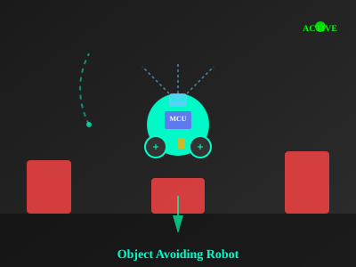

Object Avoiding Robot
Autonomous mobile robot that detects and avoids obstacles in real-time
Arduino
C++
Ultrasonic Sensor
Robotics
Motor Control
Autonomous mobile robot that detects and avoids obstacles in real-time
The Object Avoiding Robot is an autonomous mobile robot designed to navigate through unknown environments while detecting and avoiding obstacles in real-time. The robot uses an ultrasonic sensor to sense its surroundings and makes intelligent decisions to change direction when an obstacle is detected.
Key Capabilities:
The robot implements a simple but effective obstacle avoidance algorithm:

The HC-SR04 ultrasonic sensor is sensitive to environmental factors like temperature and can produce noisy readings.
Solution: Implemented a moving average filter to smooth sensor readings. Takes 5 consecutive measurements and averages them to eliminate noise and outliers.
The two DC motors had different speeds due to mechanical tolerances and varying battery voltage, causing the robot to drift during straight-line movement.
Solution: Implemented differential PWM control. Monitored motor speeds and adjusted PWM duty cycles independently to maintain straight movement.
A single forward-facing ultrasonic sensor cannot detect obstacles to the sides or rear.
Solution: Added a servo motor to rotate the ultrasonic sensor ±45° to scan left, center, and right directions before deciding which way to turn.
Initial design drew too much current, draining the battery in 30 minutes.
Solution: Optimized code to reduce sensor polling frequency, implemented sleep modes during idle periods, and used more efficient PWM frequencies.
The completed robot achieved excellent performance metrics:
The robot successfully navigated through obstacle courses of varying complexity including:
Let's collaborate on autonomous systems and IoT solutions!
Get In Touch